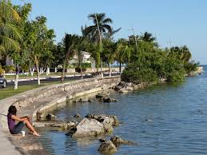
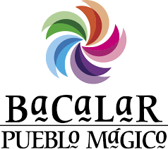
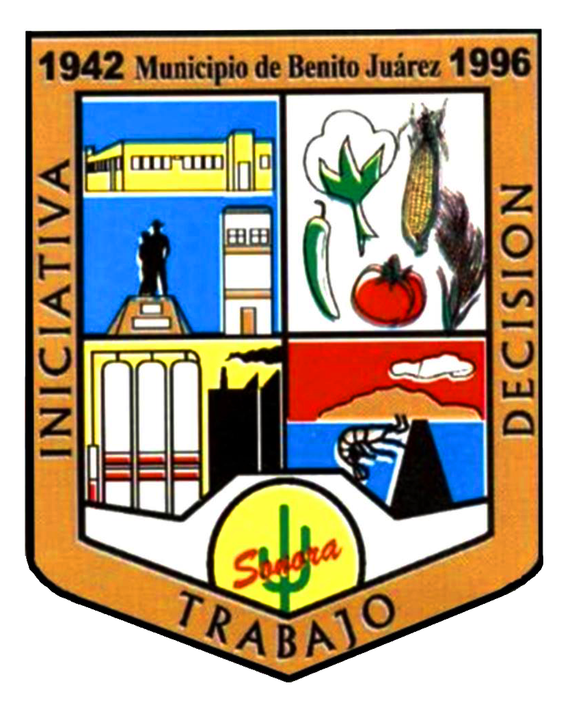
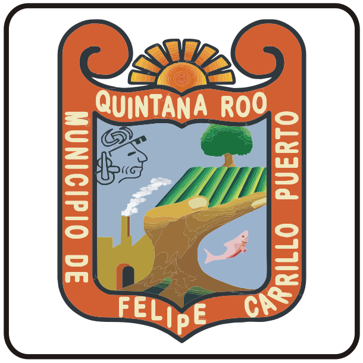
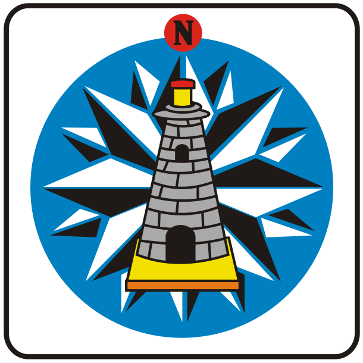
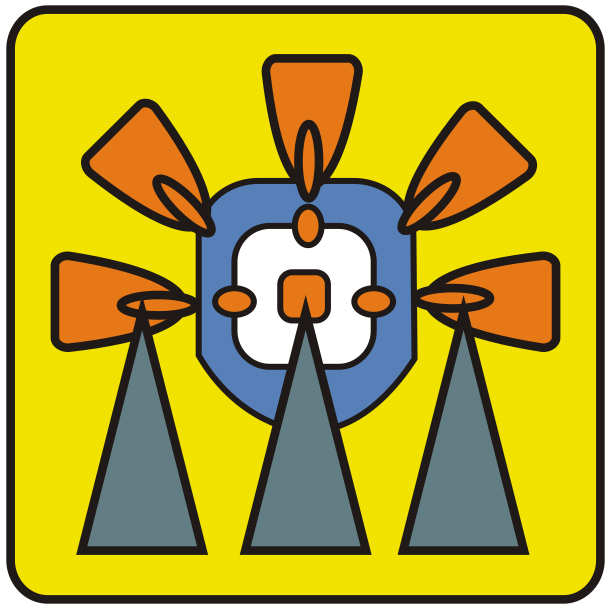
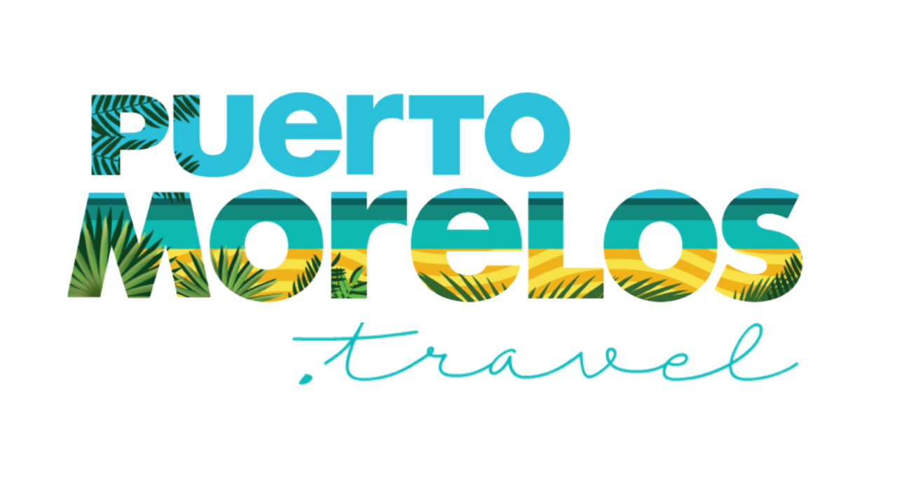
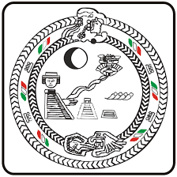
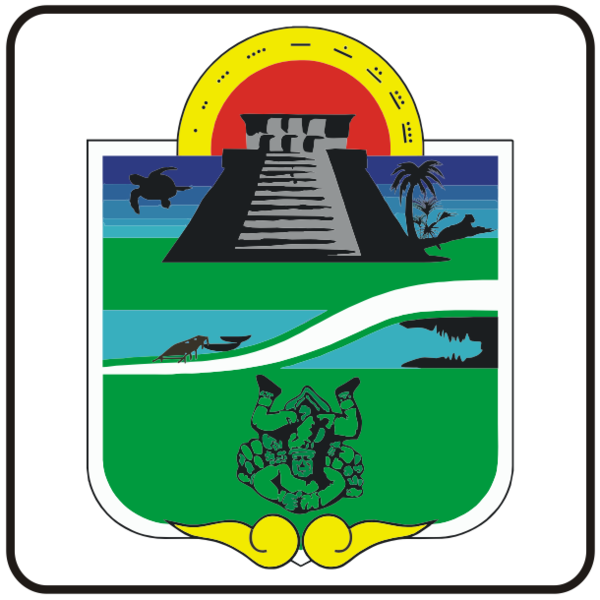

Xcaret /ʃka'ɾet/, antiguamente Polé, fue una importante ciudad comercial de la cultura maya antes de la llegada de los conquistadores españoles en el siglo XVI. Actualmente es un parque temático ecológico situado en la Riviera Maya, a 5 km al sur de Playa del Carmen y a 75 km al sur de Cancún, en el estado de Quintana Roo, México.
Cancún es una ciudad de México ubicada en la península de Yucatán que limita con el mar Caribe y que es conocida por sus playas, los numerosos centros turísticos y la vida nocturna. Se compone de 2 áreas distintas: el área del centro más tradicional y la Zona Hotelera, la franja costera con hoteles altos, clubes nocturnos, tiendas y restaurantes
Playa del Carmen es un balneario costero de México que se ubica a lo largo de la costa caribeña de la Riviera Maya, en la Península de Yucatán. Pertenece al estado de Quintana Roo y es famosa por sus playas bordeadas de palmeras y los arrecifes de coral. La Quinta Avenida peatonal se extiende en paralelo a la playa, con cuadras de tiendas, restaurantes
Holbox es una isla situada en el norte de la península de Yucatán, en el estado mexicano de Quintana Roo. Forma parte de la reserva natural Yum Balam y está separada del continente por la laguna de Yalahau, donde habitan flamencos y pelícanos. La isla se encuentra entre el mar del Caribe y el golfo de México, con aguas repletas de flora y fauna marina
Mahahual es una población del estado mexicano de Quintana Roo, importante centro turístico en desarrollo. El nombre de Mahahual podría provenir de Agua de la majagua o de lugar de mahahua o de mahahua .
Xcalak es una población de 252 habitantes sobre la costa caribeña de México en el municipio de Othón P. Blanco, estado de Quintana Roo. Ubicada en el pequeño cabo denominado Punta Xcalak, se encuentra en uno de los últimos rincones vírgenes del Caribe mexicano localizado al extremo sur de la denominada Riviera Maya. El Arrecife Mesoamericano, el segundo
Akumal es un balneario costero en la Riviera Maya de México, en la Península de Yucatán. La playa de Akumal tiene arena blanca, un arrecife de coral y aguas cálidas con una abundante fauna marina que incluye tortugas. Al norte, la bahía de la Media Luna tiene una playa curva, mientras que la laguna de Yal-kú está repleta de peces tropicales coloridos
Othón P. Blanco es uno de los 11 municipios en que se divide el estado mexicano de Quintana Roo. Su cabecera es la ciudad de Chetumal, que es también la capital del estado.Su nombre es en honor de Othón P. Blanco, colonizador de la región y fundador de Chetumal.

Bacalar (en maya: Bakhalal, ‘Cerca o rodeado de carrizos’) es una población del estado mexicano de Quintana Roo, situada en el sur de su territorio a unos 40 km al norte de la capital, Chetumal.
Desde el 2 de febrero de 2011 es cabecera del municipio de Bacalar.
Bacalar se encuentra situada en la ribera de la Laguna de Bacalar, la más importante de las lagunas del sur quintanarroense y de gran atractivo turístico. 
El Municipio de Benito Juárez es uno de los 11 municipios que integran el estado mexicano de Quintana Roo. Su cabecera es la ciudad de Cancún, destino turístico internacional. 
El municipio de Cozumel se localiza en el Caribe Mexicana del estado de Quintana Roo, presenta una distancia de 20 kilómetros a la Península de Yucatán y unos 60 kilómetros al sur de Cancún. Cozumel es una isla llana formada por roca volcánica porosa.
El Municipio de Felipe Carrillo Puerto es uno de los 11 municipios que integran el estado de Quintana Roo, México. Se encuentra localizado en el centro del estado y su cabecera es la ciudad de Felipe Carrillo Puerto, anteriormente conocida como Santa Cruz de Bravo y Chan Santa Cruz. 
El Municipio de Isla Mujeres es uno de los 11 municipios que integran el estado mexicano de Quintana Roo. Está constituido por la Isla Mujeres y un sector continental. 
José María Morelos es uno de los 11 municipios del estado mexicano de Quintana Roo y uno de los 7 municipios con los que nació el estado de Quintana Roo en 1974, es municipio fronterizo con los Estados de Yucatán y Campeche. Es el único municipio del estado que no cuenta con una franja marítima. Su superficie es de 6.739 km², tiene un total de 64 comunidades y las principales actividades económicas son las agropecuarias, tales como la agricultura, la apicultura, la silvicultura y la ganadería. 
Puerto Morelos es una ciudad puerto de México en la costa del Caribe de la península de Yucatán. Se ubica entre los centros turísticos de Cancún y Playa del Carmen en la Riviera Maya, pero conserva parte de su carácter original de aldea pesquera. El Parque Nacional Arrecife de Puerto Morelos tiene muchos sitios de buceo en el litoral. Las tortugas anidan en las playas de su costa. En el interior están los cenotes de agua dulce Las Mojarras y Verde Lucero. 
El Municipio de Solidaridad es uno de los más jóvenes en el país al haberse formado el 28 de julio de 1993 por decreto del Congreso del Estado durante el gobierno de Mario Villanueva Madrid. Su cabecera es la ciudad de Playa del Carmen. 
El Municipio de Tulum se localiza en la zona centro-norte del estado, en la llamada Riviera Maya, su cabecera es la ciudad de Tulum y su territorio fue segregado del Municipio de Solidaridad. 